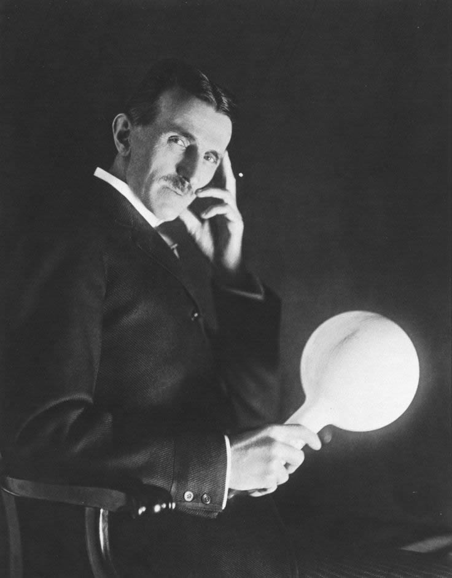
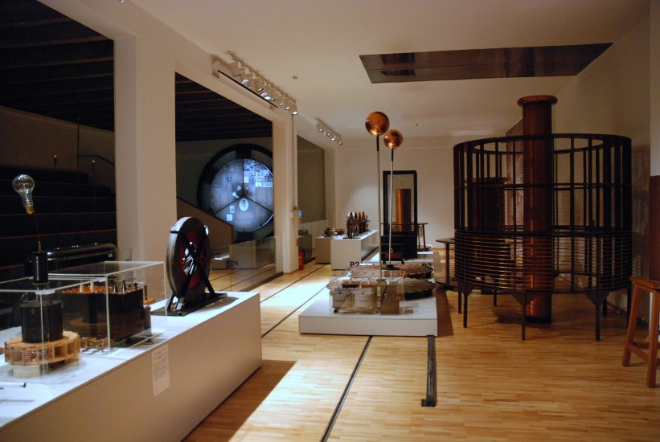
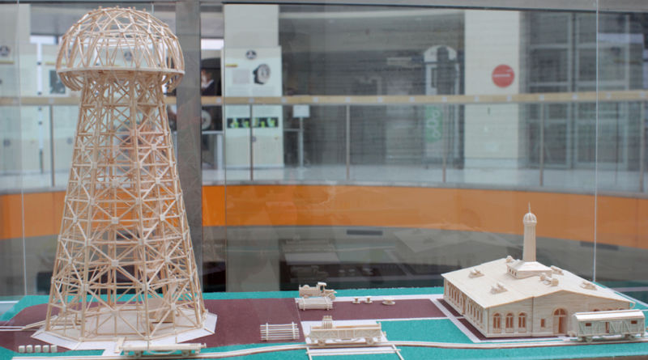
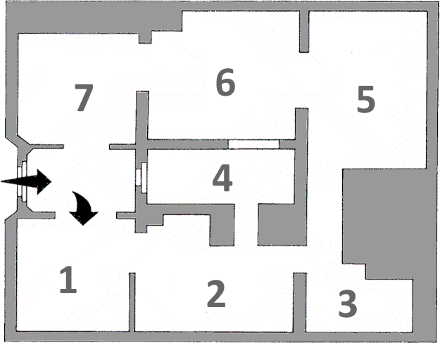
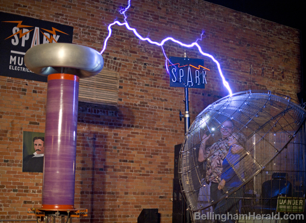
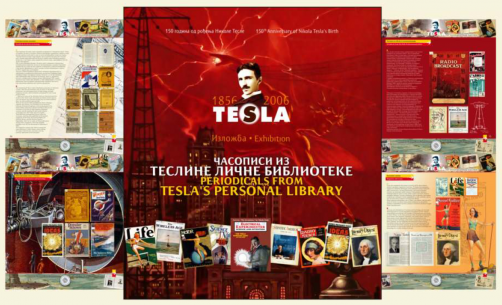

Exhibition

The future is mine
Nikola Tesla has been called the most important man of the twentieth century. Certainly he contributed more to the field of electricity, radio, and television than any other person living or dead. Ultimately he died alone and impoverished having driven all of his friends away through his neurotic and eccentric behavior. Tesla was never able to fit into the world that he found himself in. This autobiography, originally serialized in Electrical Experimenter, is an intensely fascinating glimpse into the mind of a genius, his inventions, and the magical world in which he lived.

Collection
The permanent collection, authored by Branimir Jovanovic, PhD, director of the Nikola Tesla Museum, is opened on July 8th 2016. The new concept takes into account the setting solutions from 1955 and 2006, using the best of both and promoting them in the terms of content with the new findings acquired in the meantime. The permanent exhibition is located on the ground floor of the museum building.

Replicas
The Nikola Tesla Museum collection of working models and maquettes, catalogue no. T:21, comprises 54 different exhibits (working models, replicas, maquettes and so on) created as part of the Museum’s work or received as gifts from individuals or institutions. In addition to their primary role of scientifically and professionally presenting Tesla’s life and inventions, certain museum exhibits have acquired the own historical and museological value over time. These are now unique museum items which for a full six decades have evoked the scientist’s ideas and actual inventions for visitors to the Museum.
Location
Visit

Floor Plan
1. Tesla, the man and the creator
2. Personal items, correspondence
3. The urn containing the ashes
4. Tale of electricity
5. The polyphase system and its application
6. Tesla transformer and its application
7. Direct Media-Virtual Reality Headset

Tours
Fee for guided tour in Serbian language: Single Ticket: 250 RSD Group Visit (more than 10 visitors): 150 RSD Students with ISIC (International Student Identity Card): 150 RSD
Fee for guided tour in English language: Single Ticket: 500 RSD Group Visit (more than 10 visitors): 300 RSD Students with ISIC (International Student Identity Card): 300 RSD Children- up to 7 years old- free entrance

Publications
The Tesla Collection is the most comprehensive compilation of newspaper and periodical material ever assembled by or about Nikola Tesla. The Collection begins on August 14, 1886 and continues through December 11, 1920. Comprising approximately 1,700 separate items totaling more than 4,200 pages, the Collection is drawn from both American and British publications and is reproduced directly from the original English Language material.
Contact
Do you have a question? We will respond as soon as possible
Krunska 51, 11000 Beograd, Serbia
Tuesday to Sunday, 10 am to 8 pm.
+381 (0) 11 24 33 886
+381 (0) 11 24 36 408
info@tesla-museum.org
In 2003, in recognition of the universal significance of Nikola Tesla and his inventions, UNESCO added Tesla’s archive, as part of the moveable human documentary heritage, to the Memory of the World Register, the highest form of protection of cultural assets. On the national level, the Parliament of the Republic of Serbia, in 2005, brought a Resolution declaring the archival material preserved in the Nikola Tesla Museum as the Personal Collection of Nikola Tesla to be cultural material of exceptional significance.